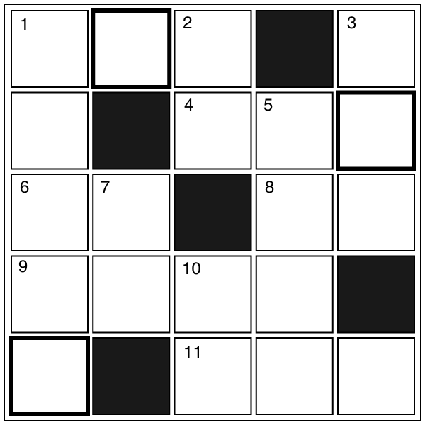

クロスワード
【→ PDF（印刷用）】

- タテのカギ
-
- １. 子供が公園で○○○○○をしている。
- ２. 物と物とをつなげるときに使う。主に金属製。
- ３. 作品などで内容の中心となる問題のこと。主題。
- ５. ○○○○島は、九州とほぼ同じ面積。
- ７. 楽器を鳴らすと出るもの。
- 10. 絵を描いて生活している人。
- ヨコのカギ
-
- １. 『牛乳』は外来語で？
- ４. 楽器の一種。エレキ○○○。
- ６. 「進め」を意味するのは、○○信号。
- ８. 家の中で家族が集まる部屋。外来語では『リビング・ルーム』。
- ９. 『内側』の反対は？
- 11. 基準に合うように全体を処理すること。データを○○○する。
【→ 解答を見る】